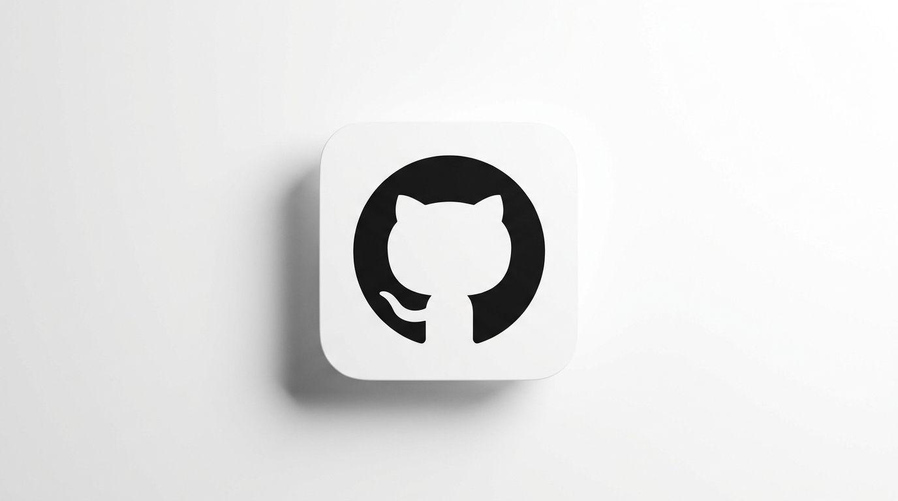
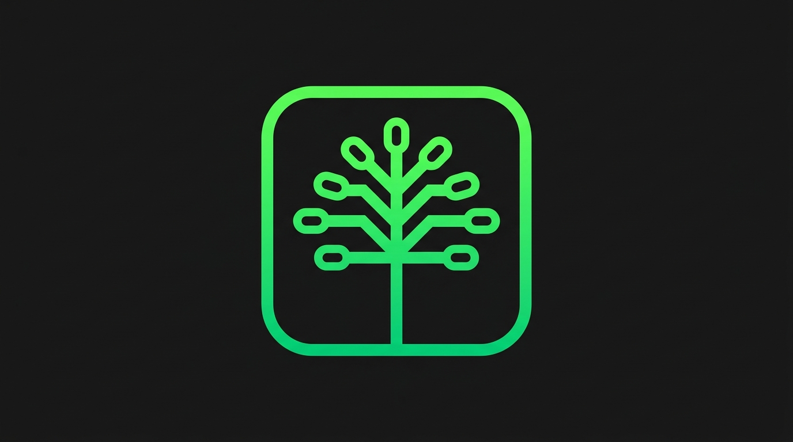
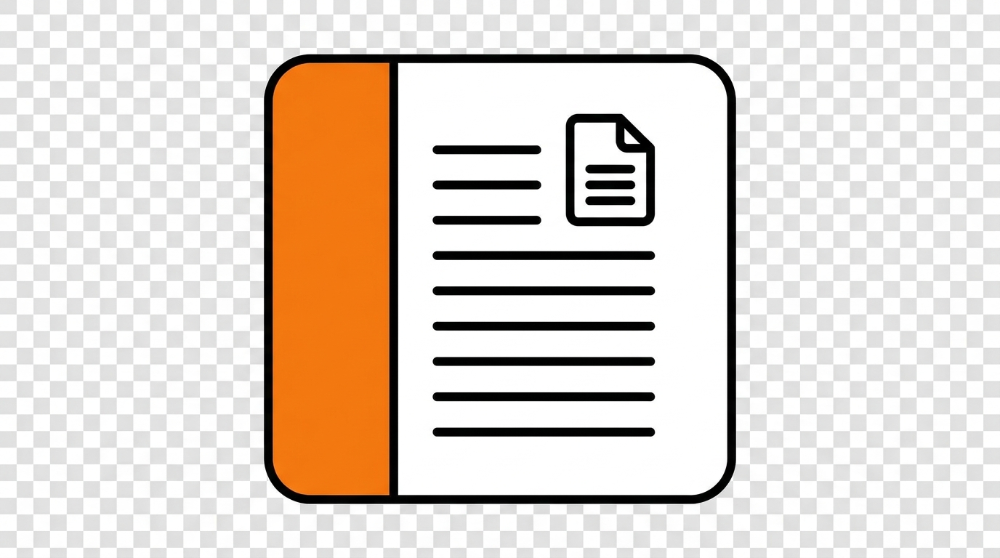

AI Workflow Builder Guide - Claude × n8n
Updated 17 November 2026
GitHub · Linktree · Instagram · Subtack
https://github.com/officialHW/n8nguide
A beginner-friendly visual guide for turning an idea into an automation - without starting from a blank n8n canvas.
What this guide does: gives you a simple mental model, a practical setup path, and examples you can adapt.
🧭
How to use this guide
Read it from top to bottom once. Then come back to the workflow examples when you are ready to build.
01. The idea
From "I have an idea" to "I have a workflow"
Think of the workflow as a small system with five parts:
Trigger → Understand → Decide → Act → Report
The goal is not to build the most complicated automation. It is to make one repeatable process easier, faster and more reliable.
Start with one repetitive task
Ask: What do I keep doing manually that follows roughly the same pattern every time?
Then describe the outcome
Example: When a new lead arrives, classify it, save it, and send the right follow-up.
02. Find me around the web
More from Henry
GitHub

Linktree

Substack

03. The workflow mindset
Old model vs new model
OLD MODEL
Start inside the tool.
Open n8n → add nodes → search for a tutorial → copy a workflow → troubleshoot → lose the original idea.
NEW MODEL
Start with the outcome.
Describe the process in plain English → use Claude to structure it → build in n8n → test each step → improve the weakest point.
💡
The shift is simple: you are designing a process first and wiring the software second.
What changes?
Old approach | New approach |
|---|---|
Tool-first | Outcome-first |
Many nodes | Minimum useful nodes |
Copy and paste | Explain, generate, test, refine |
One big workflow | Small workflows with clear jobs |
04. Required stacks
Keep the stack small
You do not need a huge software stack to get started.
Stack | Purpose |
|---|---|
Claude | Turn plain-language requirements into workflow logic, prompts and structured steps. |
n8n | Connect apps, move data and run the workflow. |
One input source | The thing that starts the workflow: form, email, webhook, spreadsheet, database or app. |
One destination | Where the workflow writes, sends or updates the result. |
Credentials | API keys, OAuth connections or service credentials required by your selected apps. |
Avoid stack inflation. Add another tool only when it solves a specific problem the current stack cannot handle cleanly.
05. Setup process
Step 1: prepare the workspace
Create or open your n8n workspace.
Connect only the apps needed for the first workflow.
Decide what data the workflow is allowed to read and write.
Keep test data separate from production data.
Step 2: give Claude a useful brief
Use a brief that explains the trigger, the data, the decision logic, the action and the expected output.
Build an n8n workflow for this process:
Goal:
[What should happen?]
Trigger:
[What starts it?]
Input data:
[What fields are available?]
Rules:
[How should the workflow decide what to do?]
Actions:
[What should happen after the decision?]
Output:
[What should the final result look like?]
Constraints:
[Security, rate limits, approvals, edge cases]
🔎
Better input → better workflow design. Claude can help structure your thinking, but vague requirements still produce vague automations.
06. How to build workflows
Example 1 - Small-business enquiry triage
Use case: a website enquiry arrives and needs to be classified before someone follows up.
Flow
Form submission → Claude classification → IF / Switch → CRM / Sheet → Email or Slack alert
Logic
New enquiry arrives.
Claude extracts intent, urgency and key details.
n8n routes the enquiry by category.
The record is stored.
The right person gets a focused notification.
Useful Claude prompt
Classify this enquiry into one of:
Sales, Support, Partnership, Other.
Return JSON only:
{
"category": "",
"urgency": "low|medium|high",
"summary": "",
"reason": ""
}
Example 2. The Signal content pipeline
Use case: turn a research idea into a repeatable content workflow for The Signal.
Flow
Topic / article input → Research notes → Claude summarise → Claude create angles → Content draft → Notion content library
Example output fields
Main idea
Why it matters
Data / evidence to verify
LinkedIn angle
Instagram carousel angle
Newsletter angle
Source links
Review status
The automation should prepare content, not silently publish sensitive or factual claims. Keep a human review step before publication.
07. Build in layers, not all at once
The 4-layer method
1. INPUT
What enters the system?
2. THINK
What needs classifying, extracting or deciding?
3. ACTION
What should happen next?
4. CONTROL
What should happen when something goes wrong?
Add drawdowns deliberately
Drawdowns = failure points, limits and places where the automation should slow down or stop rather than continue blindly.
Examples:
Missing required fields → stop and request the missing information.
Low-confidence classification → send for human review.
API failure → retry with a limit.
Duplicate record → do not create another one.
Sensitive action → require approval before continuing.
A workflow is not production-ready just because the happy path works.
08. Key principles
Build simple. Make the logic visible.
01. Start with the outcome
Do not begin with a node. Begin with the result you want.
02. Keep each workflow focused
One workflow should have one clear job.
03. Use AI where reasoning is useful
Use Claude for language, classification, extraction, drafting and transformation. Use normal n8n logic for deterministic rules.
04. Make outputs structured
JSON and consistent fields are easier to validate, route and reuse than free-form text.
05. Design for failure
Retries, validation, duplicate checks and human review are part of the workflow — not optional extras.
06. Test with ugly data
Try blanks, duplicates, unexpected text, long inputs and API failures before trusting the result.
07. Keep secrets out of prompts
Do not paste API keys, passwords or unnecessary personal data into AI prompts.
08. Human review still matters
Use automation to accelerate work, not to remove judgement where accuracy, compliance or reputational risk matters.
09. Your first build challenge
Build this in 30–60 minutes
Create a workflow that takes a new content idea and turns it into a review-ready content brief.
Input: topic
AI step: summarise + generate three angles
Rules: remove duplicates + flag missing sources
Output: save to Notion
Drawdown: if no reliable source is provided, mark the item Needs research instead of inventing one.
🚀
The goal is not to build more nodes. The goal is to remove one repeatable piece of work from your week.
If you have found this guide useful, do follow on substack, or require 1-1 consultation do book a meeting with me on linktree.
Review gate:
Credits & links
Built as a practical learning guide for people exploring AI automation, n8n and creator workflows.